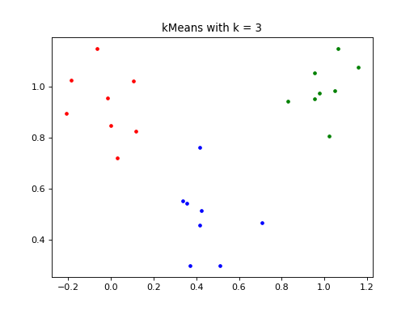

k-Means Clustering¶
cluster.cluster provides an interface for k-Means Clustering and Spectral Clustering.
-
class
KMeansClustering(k: int, max_iter: int = 1000, rep: int = 10, seed: Optional[int] = None, eps: float = 1e-10, norm: int = 2)¶ k-Means Clustering object
- Parameters
k – the number of clusters to create
max_iter – maximum number of iterations to perform for convergence of clusters
rep – number of times to repeat the clustering algorithm
seed – seed to use
eps – stopping criterion
norm – the norm to use
-
cluster(points: numpy.array) → None¶ cluster the points provided
- Parameters
points – the dataset to be clustered in form (N x d) where N is the number of points to be clustered
- Returns
None
-
get_labels() → numpy.array¶ get labels
- Returns
labels
- Return type
np.array
-
get_points() → numpy.array¶ get points
- Returns
points
- Return type
np.array
Example¶
import numpy as np
from scipy.stats import multivariate_normal
from cluster.cluster import KMeansClustering
from cluster.utils import visualize_clusters_2d
# matplotlib only for visualization
import matplotlib.pyplot as plt
# create the dataset
np.random.seed(42)
mvn1 = multivariate_normal(
mean=np.array([1, 1]), cov=np.eye(2) * 0.01)
mvn2 = multivariate_normal(
mean=np.array([0.5, 0.5]), cov=np.eye(2) * 0.02)
mvn3 = multivariate_normal(
mean=np.array([0, 1]), cov=np.eye(2) * 0.02)
rvs1 = mvn1.rvs(8)
rvs2 = mvn2.rvs(8)
rvs3 = mvn3.rvs(8)
points = np.vstack([rvs1, rvs2, rvs3])
# cluster the dataset
k_means_clustering = KMeansClustering(k=3)
k_means_clustering.cluster(points=points)
labels = k_means_clustering.get_labels()
# visualize the clusters in 2D
fig, ax = plt.subplots()
ax = visualize_clusters_2d(points, labels, ax, 'kMeans with k = 3')
plt.show()
(Source code, png, hires.png, pdf)
{kind=link}
{kind=link}
